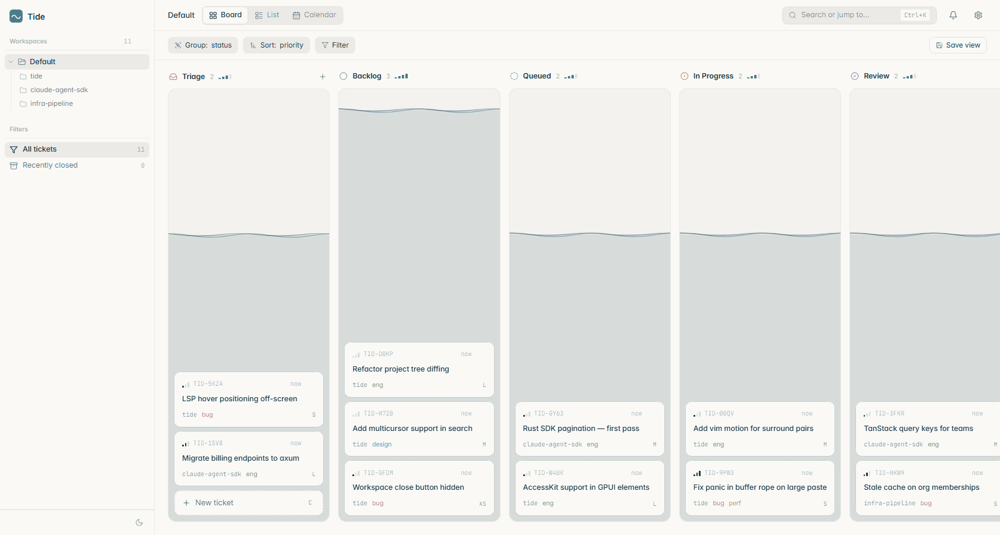

Tide is a Linear-style Kanban desktop app where Claude Code does the implementation. Write the ticket — get a branch, a diff, and a review tab.
Each repo gets its own worker. Tickets flow Backlog → Queued → In Progress one at a time so branches never collide.
Multiple repos run in parallel. Watch the live stream, jump with ⌘P, drop into Review the moment a diff lands.
⌘E resumes the Claude session with new instructions — your branch and context survive.

The board moves while you sleep.
Tide auto-stashes your dirty working tree before a run, spins up Claude Code on a fresh branch, and hands you back a clean review tab. Merge, change-more, or discard — your call.